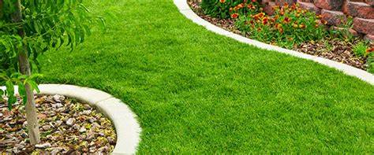

Plantation et Gazon
Nous réalisons la plantation de gazon naturel ou synthétique selon vos besoins.Chez Lucas Jardins, nous savons que l'entretien de votre espace extérieur commence par un gazon de qualité. Que vous souhaitiez aménager un jardin verdoyant, une aire de jeux ou une pelouse agréable pour vos moments de détente, notre service de plantation de gazon répond à toutes vos attentes. Nous vous proposons des solutions sur mesure adaptées à vos besoins, en utilisant des semences de gazon de haute qualité, résistantes aux conditions climatiques locales.
→ Découvrir nos toits et murs végétalisés
Des Gazonnières de Qualité pour un Résultat Durable
Nous offrons deux options principales pour la plantation de gazon : le gazon en rouleaux et le semis traditionnel. Le gazon en rouleaux est une solution rapide et esthétique, idéale pour des résultats immédiats et une pelouse dense et uniforme. Pour ceux qui préfèrent un entretien plus naturel et écologique, nous recommandons le semis de gazon, une méthode qui permet une installation progressive et plus économique, tout en respectant l’environnement.
Un Service Complet d’Aménagement
L’équipe de Lucas Jardins se charge de l’ensemble du processus, de la préparation du sol à la plantation proprement dite. Nous procédons d’abord à un nettoyage et un nivellement minutieux du terrain pour garantir une surface bien aérée et propice à la croissance. Ensuite, nous choisissons et appliquons les semences adaptées à votre type de sol et à l’exposition de votre jardin. Notre expertise permet d’obtenir un gazon qui résistera aux intempéries et à l’usure, pour un jardin verdoyant tout au long de l’année.
Entretien et Suivi
Après la plantation, nous vous proposons également des services d’entretien du gazon. Cela comprend la tonte, l’arrosage et la fertilisation pour que votre pelouse reste en parfaite santé. Nous offrons également des conseils pour optimiser l’entretien, en fonction des saisons et des besoins spécifiques de votre terrain.